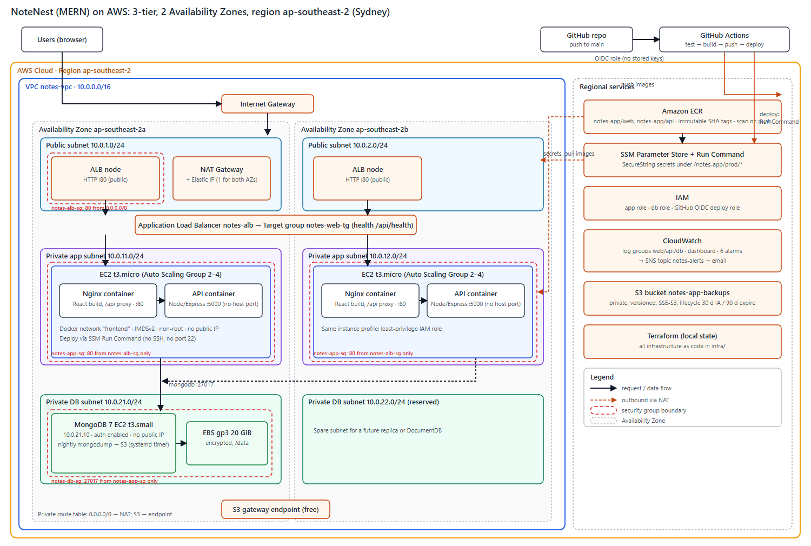

The application runs on Amazon Web Services in the Asia Pacific (Sydney) region, ap-southeast-2. AWS was chosen for the maturity of the managed building blocks this design needs (a managed Application Load Balancer, Auto Scaling, private networking, a container registry, a secret store, and monitoring), because a new account includes credits and a budget service for cost control, and because GitHub Actions can authenticate to AWS with short-lived OIDC credentials instead of stored keys. Sydney is the region offered by the account's organization and is also one of the three regions its policy allows; the Mumbai region originally planned for latency from Pakistan was not available, so all latency figures in this report include the long path from Pakistan to Sydney.
The app is a React single-page front end and an Express/Node API backed by MongoDB. It runs as two containers per server (Nginx web and Node API) on EC2 instances in private subnets behind a public load balancer, with MongoDB on a separate private instance. Request path: Browser → Application Load Balancer (public subnets, 2 zones) → EC2 instance in a private app subnet → Nginx container (serves the React build and proxies /api/*) → API container on the same Docker network (no published port) → MongoDB instance in a private DB subnet (port 27017, app security group only). Deploys are driven by git push through GitHub Actions.

| Decision | Choice | Why |
|---|---|---|
| Compute | EC2 + Auto Scaling Group, Docker Compose on each instance | Matches the brief's "same host with docker-compose" path; simpler than ECS or Kubernetes for a student project. |
| Database | MongoDB 7 in Docker on a private EC2 with a separate encrypted EBS volume | Keeps the MERN code unchanged; a properly secured self-managed database is allowed; the EBS volume satisfies an enhancement option. |
| Registry | Amazon ECR, immutable tags, scan on push | IAM-controlled; every image is tagged with the git commit SHA so every deploy is traceable and rollback is just an older tag. |
| Secrets | SSM Parameter Store SecureString | Encrypted, IAM-scoped, free for standard parameters; values never enter Terraform state or git. |
| Deploy | SSM Run Command, one instance at a time | No SSH keys and no port 22 anywhere. |
| Infrastructure | Terraform (59+ resources) | Repeatable, reviewable, and allows nightly teardown to save money. |
| Tier | AWS services |
|---|---|
| Network | VPC 10.0.0.0/16; 2 public, 2 private-app and 2 private-DB subnets across two zones; Internet Gateway; one NAT Gateway; public and private route tables; free S3 gateway endpoint. |
| Web | Application Load Balancer, target group with health check on /api/health, Auto Scaling Group (2–4 t3.micro) with target tracking at 50% CPU; Nginx container. |
| App | Node/Express container on the same instances, reachable only through Nginx. |
| Database | t3.small EC2 running MongoDB 7 with authentication and a least-privilege application user; encrypted gp3 EBS volume. |
| Registry / CI-CD | ECR (two repositories); GitHub Actions authenticating with an OIDC role. |
| Monitoring / backup | CloudWatch log groups, dashboard and 6 alarms, SNS email topic; S3 bucket for nightly MongoDB dumps (private, versioned, encrypted, lifecycle rules). |
| Admin / secrets | SSM Session Manager and Run Command; SSM Parameter Store; IAM roles per tier. |
Containers. The web image is a two-stage build (Node builds the Vite app, then nginx:alpine serves it with gzip, long cache for hashed assets, a SPA fallback and a reverse proxy to the API). The API image is a two-stage build too: TypeScript is compiled in the first stage, and the final stage installs production dependencies only and runs as the non-root node user with a container health check. Locally, docker compose uses two networks so the web container cannot reach MongoDB, and only Nginx publishes a port (8080). On AWS the production compose file publishes only port 80 on the host, which the security group allows from the load balancer alone.
Pipeline. On every push to main: (1) test: backend unit and integration tests against a real MongoDB service container, type-check, front-end tests and build; (2) build-push: images are built for linux/amd64 and pushed to ECR tagged with the short commit SHA; (3) deploy: the new tag is written to an SSM parameter, a rolling SSM Run Command (one instance at a time, stop on first error) runs the deploy script on each server, and a smoke test calls /api/health through the load balancer until it reports the new version. Pull requests run only the test job. If any deploy step fails, a final step restores the previous tag and redeploys it. AWS access uses an OIDC role restricted to this repository's main branch; the only secret stored in GitHub is the role's address.
| Test | Result |
|---|---|
| Automated tests | Backend: 78 tests (including 8 integration tests against real MongoDB); front end: 108 tests; both run in CI. |
| Pipeline | Full run green (test, build-push, deploy); /api/health reported the new commit as version; both targets healthy. |
| Pull request with a failing test | Check turned red, only the test job ran, nothing deployed. |
| Automatic rollback | A release whose API container crashed on start failed the rolling deploy; the rollback step restored the previous version. One sampled 502 (about 20 seconds) while the first server was switched; the other server stayed healthy. |
| Scaling out and in | The initial load test (autocannon, 200 connections, 8 minutes, from a laptop in Pakistan to Sydney) did not raise CPU above about 14%, so it could not trigger scaling. Using the plan's fallback (CPU burn on the app servers through SSM), CPU reached 100% and the group scaled from 2 to 4 instances in about 6 minutes; after the load stopped it scaled back to 2 within about 15 minutes. |
| Load test numbers | 63,000 requests in 481 s (about 116 requests/s average), 55,400 successful, about 7,000 timeouts (11%), median latency 293 ms, p99 7.5 s. These reflect the single-laptop client and the long network path, not the servers' capacity; they should be read as a smoke test, not a benchmark. |
| Server failure | One app instance terminated: the application kept answering (one 502 in the first seconds), and the group launched a healthy replacement in about 4.5 minutes. |
| Database reboot | API health returned 503 for about 35 seconds, then recovered by itself; data was intact. This is the known single point of failure. |
| Backup and restore | A dump was written to S3 and restored into a separate database; document counts matched (1 user, 1 note in each). |
| Security checks | Private addresses and port 5000 unreachable from the internet; /.env returns the web app's index page; API without a token returns 401; no public IPs and no rule for port 22; least-privilege test passed after the fix above. |
| NFR | Supporting decisions | Limitation / improvement |
|---|---|---|
| Scalability | Stateless containers with JWT; load-balanced; Auto Scaling 2–4 (demonstrated 2→4→2). | The database scales only vertically; move to a replica set or DocumentDB. |
| Availability / reliability | Two zones; ELB health checks replace bad instances (tested); Docker restart policy; nightly backups with a tested restore. | One MongoDB instance and one NAT Gateway (one zone) are single points of failure (database outage of about 35 s on reboot); use a 3-node replica set and a NAT per zone. |
| Elasticity | Target tracking at 50% CPU with automatic scale-in. | Reaction takes minutes; the database is not elastic. |
| Security | See section 5. | HTTP only because no domain was available; add a domain, an ACM certificate and HTTPS, plus AWS WAF. Web and API share hosts. |
| Maintainability / deployability | Dockerfiles, compose, Terraform, CI/CD with tests, SHA-tagged images, automatic rollback. | No staging environment; Terraform state is local and must be backed up. |
| Performance / latency | Nginx gzip and long-lived asset caching; health-checked routing. | Measured median 293 ms from Pakistan to Sydney is mostly network distance; a CDN such as CloudFront and a cache such as Redis would help. |
| Cost efficiency | Burstable t3 instances, scale-in, free S3 gateway endpoint, log retention of 14 days, S3 lifecycle, teardown when idle. | NAT Gateway is the largest cost; see section 8. |
| Portability | OCI images run anywhere; compose; configuration through environment variables; MongoDB image is not AWS-specific. | Terraform, SSM and the ALB are AWS-specific; Kubernetes and Helm would improve portability. |
Other honest limitations: the stack was built and tested in a single sitting from a student account with one organization-level restriction that temporarily blocked the GitHub OIDC connection until the organization owner lifted it; ECR vulnerability scan results were not captured for the images built locally with attestation manifests (the CI builds disable them); and the load test used one laptop.
Estimated at about US$127 per month if always on in Sydney (730 hours, on-demand, 2 app servers): NAT Gateway about US$43, EC2 about US$39, Application Load Balancer about US$24, public IPv4 addresses about US$11, EBS about US$5, other services about US$5 (prices from the AWS Price List API; see docs/COST-ESTIMATE.md). Because the environment runs only while building and testing, actual spend is a few US dollars per day. Two optimizations: replacing the NAT Gateway with a small NAT instance saves about US$39 per month (a managed-service trade-off), and moving to Graviton (arm64) instances saves about US$7.6 per month; running only about 8 hours per working day cuts the hourly-billed items by about US$84 per month.